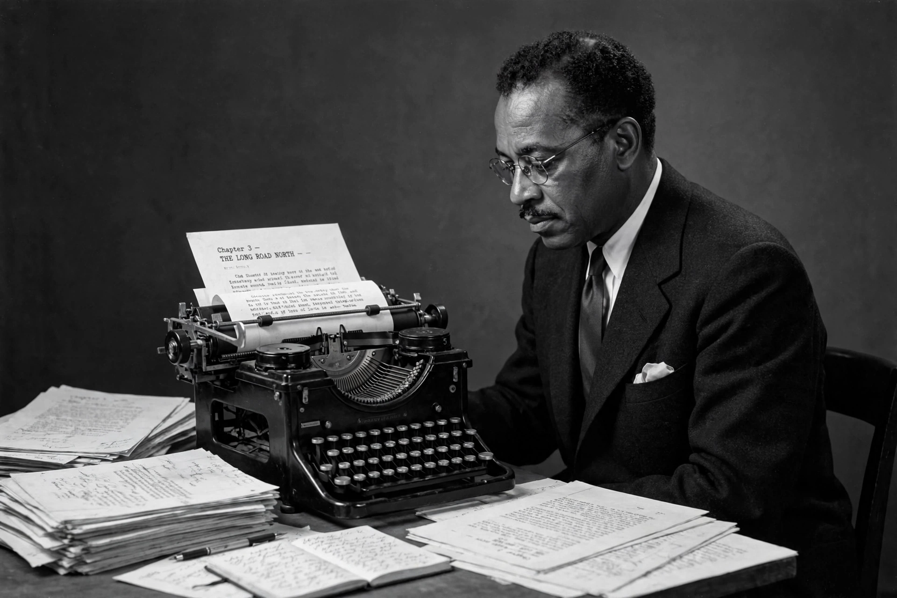

Richard Wright (author)
| Richard Wright | |
|---|---|
| Born | Richard Nathaniel Wright, 4 September 1908, Roxie, Mississippi, U.S. |
| Died | 28 November 1960 (aged 52), Paris, France |
| Occupation | Novelist, short-story writer, essayist, poet |
| Notable works | Native Son (1940), Black Boy (1945), Uncle Tom's Children (1938) |
| Movement | Social realism, protest literature |

Richard Nathaniel Wright (September 4, 1908 – November 28, 1960) was an American author of novels, short stories, poems, and non-fiction. Much of his literature concerns racial themes, especially related to the plight of African Americans during the late 19th to mid-20th centuries suffering discrimination and violence. His work helped change race relations in the United States in the mid-20th century. He is best known for the novel Native Son (1940) and the memoir Black Boy (1945).
Early life
Wright was born on a plantation near Roxie, Mississippi, the son of a sharecropper and a schoolteacher. His childhood — marked by poverty, his father's desertion, periods in an orphanage and with relatives in Jackson, Mississippi — supplied the material for Black Boy. Largely self-educated through voracious reading (famously obtaining library books with a borrowed white co-worker's card), he moved to Memphis and then, in 1927, to Chicago in the Great Migration.
Career
In Chicago Wright worked at the post office, joined the John Reed Club, and became involved with the Communist Party, writing for left-wing publications. His story collection Uncle Tom's Children (1938) won a Story magazine prize. Moving to New York, he edited for the Daily Worker and co-founded journals. Native Son (1940), the story of Bigger Thomas, a young Black man in Chicago driven to murder, was a Book-of-the-Month Club selection and bestseller that made Wright the most famous Black writer in America; he adapted it for the stage with Orson Welles (1941) and later played Bigger himself in a 1951 Argentine film version. Black Boy (1945), his autobiography of childhood in the Jim Crow South, was another major success. Wright broke publicly with the Communist Party, contributing to the anti-communist anthology The God That Failed (1949).
Exile in Paris
In 1947 Wright settled permanently in Paris, associating with Jean-Paul Sartre and Simone de Beauvoir and with fellow expatriates including James Baldwin — with whom he later quarrelled publicly. His later work turned to travel reportage and politics (Black Power, 1954, on Ghana; The Color Curtain, 1956, on the Bandung Conference) and existentialist fiction (The Outsider, 1953). He wrote thousands of haiku in his final years, published posthumously.
Death and legacy
Wright died of a heart attack in Paris on 28 November 1960, aged 52, and was cremated at Père Lachaise Cemetery. His influence on African American literature is foundational — Ralph Ellison and James Baldwin both defined their work partly against his protest naturalism. Posthumous publications include Eight Men (1961), the uncensored American Hunger (1977, the full second half of Black Boy), and the restored novel The Man Who Lived Underground (2021).